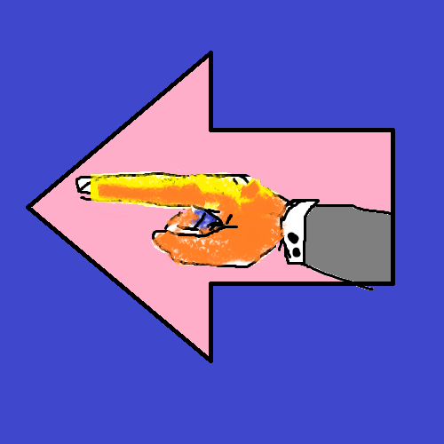

Hello my Name is Alex and this is my website!


 < "Hello and Welcome to my Interactive Resume"
< "Hello and Welcome to my Interactive Resume"
3914 Trentwood Pl.
Sarasota, Florida
Phone: 941-504-3127
Email: ab16m@my.fsu.edu
Florida State University - Tallahassee, FL,
Fall 2016 – Summer 2021
Bachelor of Science, Information Technology
Specialization: Development, UX/UI Design
• Android Studio Mobile App Development
o Constraint Layout
o Recycler View
• Programming (Java, Kotlin, Python)
o Multi-Threading
o Sockets and I/O
o M.V.C. (Model View Controller) Structure
• Database Experience (MySQL, SQLite)
• Distributed Version Control w/ GIT
• Windows OS & Command Prompt
• HTML, CSS, JavaScript
• Linux OS & Terminal
• Other Skills:
o Customer Service
o Interpersonal Business Communications
o Code Documentation
Midtown Kava Lounge - Bar Tender: Spring 2020 – Winter 2020
• Operated the bar for a majority of operating hours (6/12 shifts a week).
• Worked the bar as the solo employee on the clock during my shifts.
• Helped to fill a gap left during a shift in the bar’s ownership.
Midtown Caboose - Line Cook: Spring 2019 – spring 2020
• Operated the flat-top grill preparing hundreds of plates a night.
• Cleaned the kitchen equipment, including the flat-top grill, every night.
• Participated in staff meeting and goal setting for the restaurant.
Arborists by Nature – Ground Man: Summer 2020
• Assisted a local tree crew in safely removing dangerous leaning trees.
• Operated and maintained chainsaws and other equipment.
• Consistently showed up before sunrise for 10 hour shifts.